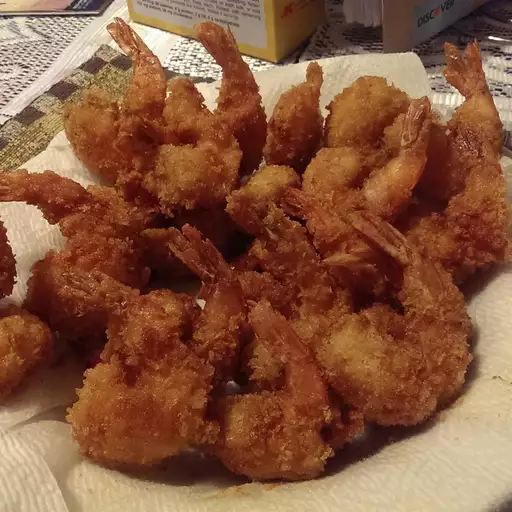

Japanese-Style Deep-Fried Shrimp

Photo by Animelover
Description
Deep-Fried Shrimp seasoned with salt, pepper and paprika and coated with panko crumbs to provide that crunchy
texture.
Recipe by ait0shi
Ingredients
- ~454 grams (1 pound) of shrimp, peeled (tails left on) and deveined
- ½ teaspoon of salt
- ½ teaspoon of ground black pepper
- ½ teaspoon of garlic powder
- 1 cup of all-purpose flour
- 1 teaspoon of paprika
- 2 large eggs, beaten
- 1 cup of panko crumbs
- ~1.1 litres (1 quart) vegetable oil for frying
Steps
- Place the shrimp in a bowl and season with salt, pepper and garlic powder. Mix flour and paprika together in
a shallow bowl. Place the eggs in a second bowl and panko in a third bowl.
- Heat oil in a deep fryer or deep skillet to 190° Celsius (375° Fahrenheit).
- Dip each shrimp into flour mixture, then into egg, and finally into panko crumbs.
- Fry a few shrimp at time in the hit oil until golden brown, about 5 minutes. Remove with a slotted spoon and
drain on paper towels before serving.
Return to Index